灵犀魔方 · 模拟产线系统 · 交互设计
一条产线，
先在电脑里跑一遍。
灵犀魔方是中建钢构做的产线设计与仿真平台。我负责它的交互和界面，从搭产线的工作台、接设备的集成页、AI 助手，一直做到仿真看板、设备大屏、登录页和官网。
背景
先弄清楚：钢构厂的产线卡在哪。
项目汇报时梳理出三个问题。后面每一块界面，都是对着这三个问题做的。
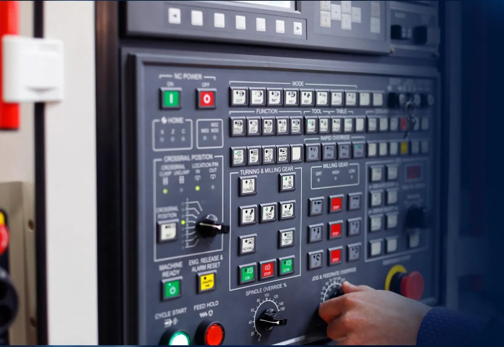
设备调试难每台设备协议不同，要人到现场一台台调目标
这三个目标，后来就成了工作台顶部的三个页签：设计、集成、流程。
产品
一套软件，加两台硬件。
「1+2+4」：一台产线大脑（灵犀魔方），两个终端（物联网关、工位机），四种能力。我做的是跑在上面的软件界面。
云、边、端三层：云上做设计和管理，边缘网关接设备，端上是各种机器人和工作站
四种能力：产线设计师、设备集成专家、调度大脑、车间的眼睛
入口
打开系统，先看到项目。
项目按设计、集成、仿真分类。新建时可以从精选模板开始，不用从零搭。
项目空间：卡片直接显示产线缩略图
首页：按行业找模板，按角色进应用
资源广场：协议配置、组件、模板集中管理
设计 · 搭产线
拖设备，搭场景，配参数。
最常用的部分。用户在这里把一条产线从空白画布搭出来。
- 模型库
- 3D 画布
- 属性栏
- 仿真时间轴
工作台
一个工作台，四个区域。
局部放大
模型库 · 分类查找
搜索加树形目录，展开类别再选具体设备。选中的那一项用浅蓝底色标出来。
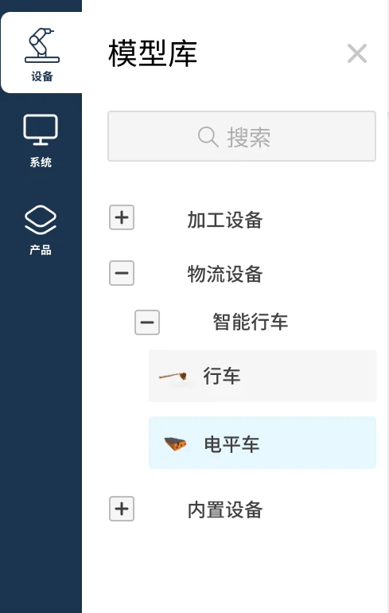
布局工具 · 集中编辑
撤回、缩放、对齐、组合、连接线放一组；甘特图、利用率这些分析工具用分隔线隔开，放另一组。
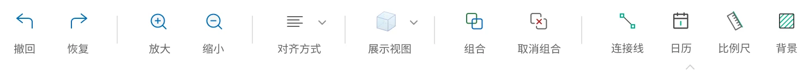
仿真控制 · 时间轴
播放、停止、步进固定在底部，旁边就是运行时间和进度。
属性栏 · 分组配置
设备信息 → 空间参数 → 仿真属性，从上到下按顺序分组，方便一项项核对。
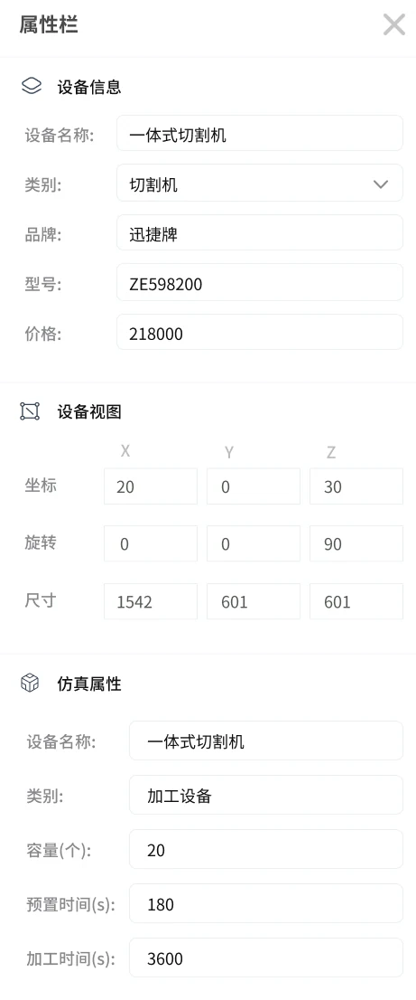
工具栏
顶部工具栏，改了几轮。
编辑工具在左，统计分析在右，中间用分隔线分组。改动主要在右上角的操作按钮。
早期右上只有部署、保存、导出
加上采购和模板搭好的产线能存成模板，缺的设备直接采购
加入 AI 页签页签变成设计、流程、仿真、AI，右侧换成会话历史
画布模式
只想看场景时，把界面收起来。
菜单和面板收起，工具缩成顶部一排图标。底部用「设计 → 集成 → 流程」三个圆点切换阶段，当前阶段高亮。
选中设备后出现坐标轴，直接拖动、旋转
左侧弹出模型树，场景里有什么一目了然
三个阶段 · 并排切换
设计、集成、流程并排放在底部，当前在哪一步用蓝色突出。
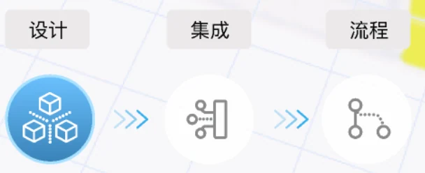
图标 · 配上文字
工具缩成图标后，下面都配文字：菜单、工具、仿真、撤销、恢复、保存、锁定、采购。
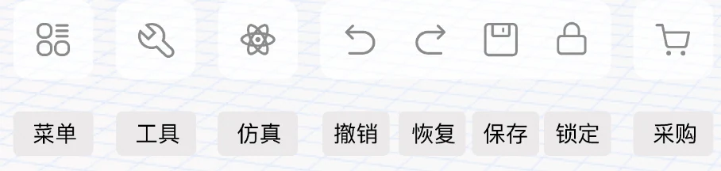
上线演示
搭一条 H 型钢产线，直接跑仿真。
从空画布拖入设备，连成产线，点运行，最后在看板里看产量和设备利用率。
上线录屏：搭建 → 仿真 → 看板
以前：手绘、CAD 画布局
现在：像搭积木一样拖设备
集成 · 接设备
画几条线，设备就绑定了。
把真实设备接进来：网关连设备、系统连订单。协议由网关自动适配。
- 边缘网关
- 设备节点
- 连接属性
集成
从节点关系，到一眼看清的卡片。
网关、设备、系统、产品用节点和连线表达。版本之间主要在改「哪个是重点」。
对象关系 · 节点连线
边缘网关连一组设备；系统连班组和订单模型；产品单独一类。谁和谁有关系，用线一眼看出来。
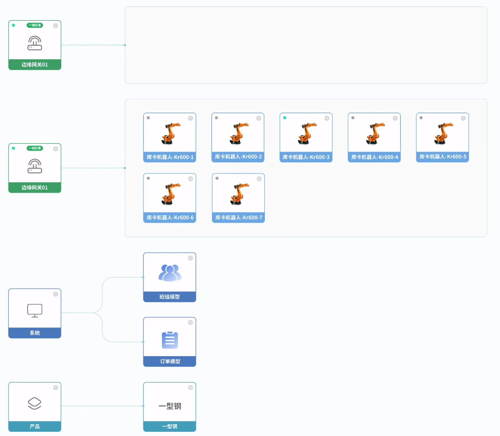
设备属性
设备信息和连接属性分两组：网关、DeviceCode、Host 放在一起查。
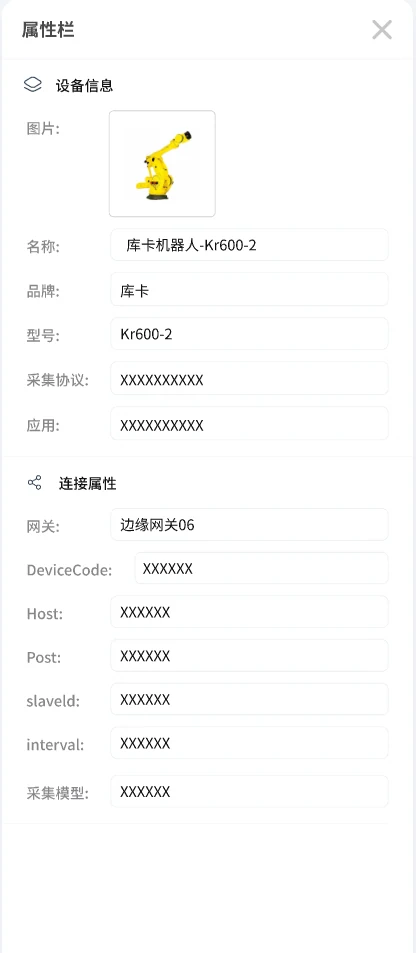
上线录屏：网关拖线连接设备，右侧同步显示属性
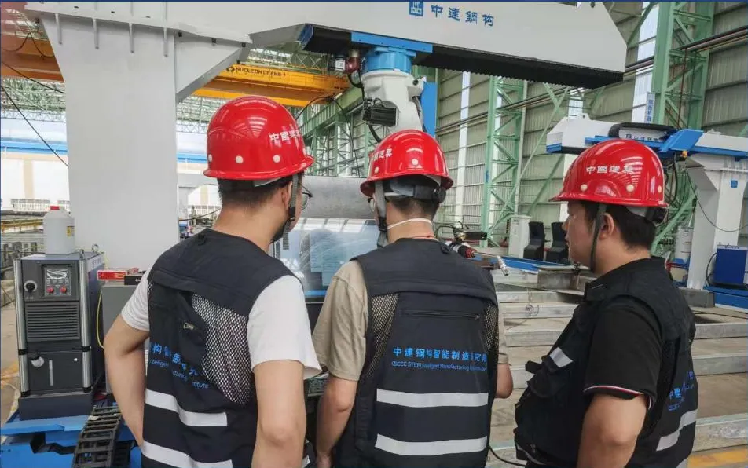
以前：几个人围着设备现场调协议
流程
工序编排：上料、切割、分拣。
工序做成节点，再往下接设备、条件分支和算法模块。中间件从左侧库里拖进来。
工序与节点编排
上料、切割、零件分拣排成工序链，再往下连设备节点、条件分支和算法模块。
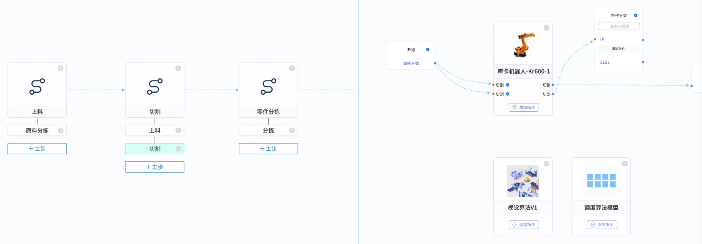
工序信息单独维护
名称、编码、颜色、排序编号放在一起，不同工序一眼分清。
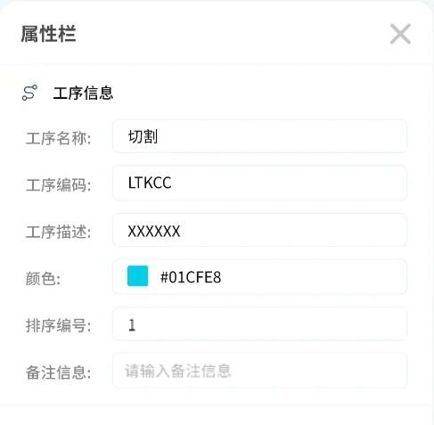
左侧中间件库：条件判断、开始、结束
AI · 说一句话
跟它说要什么产线，它先搭一版。
AI 不替人做决定，它先给一个能改的起点。
- AI 辅助建模
- 语音指令
- 风险预测
上线录屏：输入需求，AI 生成整条产线
AI 助手
放在右侧，不挡画布。
AI 单独一个页签，右侧面板保留会话历史
运行 · 看产线
跑起来以后，要看得见。
仿真看板、设备大屏、设备地图，都是给车间和管理者看的。
- 仿真看板
- 设备大屏
- 设备地图
看板
产线看板，做了三版。
从「放满图表」到「围绕一次仿真」：每一版都在减少不需要的东西。
设备大屏
从「看数据」，到「能操作」。
单台设备的大屏，左边状态、中间设备、右边效率。
设备地图
设备在哪，地图上看。
先做了浅色网页版，再出深色版，最后做成全国范围的大屏。
浅色：点位颜色区分在线、离线
深色：和大屏风格统一
全国：按公司看设备总数和告警
设备详情：用颜色条看一天的工作、待机、报警
网关监控：网关上运行的服务和资源占用
总结
从一张空白画布，到一条跑起来的产线。
做的事情很多，但目标一直没变：让产线设计更快，设备接入更简单，运行状态看得见。
拖设备搭产线，模板复用
画线绑定设备，自动适配
仿真先跑，看板和大屏盯着